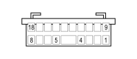

D001B FRONT/DASHBOARD COUPLING (DASHBOARD)
- Path
- Electrical equipment > 3 CONNECTORS > D INTERMEDIATE COUPLINGS > D001 FRONT/DASHBOARD COUPLING > D001B FRONT/DASHBOARD COUPLING (DASHBOARD)
- Kind
- connector pinout (pin -> wire colour -> other end)
- Applies to
- all engines; all production periods
- Interactive page
- https://sloeber94.github.io/elrnDB-fDct/en/#/244002616
Applies to: all engines; all production periods

Wiring | Colour |
|---|---|
BIANCO (white) |
Pin | Cable | Destination | |||
|---|---|---|---|---|---|
Sec.. | Colour | Node | Connect. | Pin | |
1 | 0,5 | HN (grey with black stripe) | 1 | ||
2 | 0,35 | SR (pink with red stripe) | 9 | ||
3 | 0,35 | GR (yellow with red stripe) | 11 | ||
4 | 1,5 | AN (light blue with black stripe) | 47 | ||
5 | 0,35 | NV (black with green stripe) | 3 | ||
6 | 0,5 | RN (red with black stripe) | 4 | ||
7 | 0,35 | BZ (white with violet stripe) | 7 | ||
8 | 0,35 | BR (white with red stripe) | 8 | ||
9 | 0,5 | LB (blue with white stripe) | 4 | ||
10 | 0,35 | BV (white with green stripe) | 1 | ||
11 | 0,5 | G (yellow) | 3 | ||
12 | 0,35 | HG (grey with yellow stripe) | 15 | ||
13 | 0,5 | V (green) | 6 | ||
14 | 0,5 | B (white) | X | See D160A DASHBOARD/OPTIONAL DASHBOARD COUPLING (OPTIONAL DASHBOARD) | 13 |
11 | |||||
15 | 0,5 | LG (blue with yellow stripe) | 12 | ||
16 | 0,5 | HM (grey with brown stripe) | 9 | ||
17 | 0,5 | MZ (brown with violet stripe) | See D160A DASHBOARD/OPTIONAL DASHBOARD COUPLING (OPTIONAL DASHBOARD) | 14 | |
18 | 0,35 | NS (black with pink stripe) | 12 | ||
19 | 0,5 | HG (grey with yellow stripe) | See D160A DASHBOARD/OPTIONAL DASHBOARD COUPLING (OPTIONAL DASHBOARD) | 2 | |
Topics linked from this page (12)
- 20 DASHBOARD
- B002C JUNCTION UNIT UNDER DASHBOARD (DASHBOARD)
- D097A SHORT CIRCUITING COUPLING (DASHBOARD)
- D097B SHORT CIRCUITING COUPLING (DASHBOARD)
- D097C SHORT CIRCUITING COUPLING (DASHBOARD)
- D160A DASHBOARD/OPTIONAL DASHBOARD COUPLING (OPTIONAL DASHBOARD)
- E050B INSTRUMENT PANEL (DASHBOARD)
- E050C INSTRUMENT PANEL (DASHBOARD)
- E050E INSTRUMENT PANEL (DASHBOARD)
- H090A SWITCH CONTROL PANEL (DASHBOARD)
- I030 BRAKE PEDAL SWITCH
- R010 MULTIPLE TESTER CONNECTION